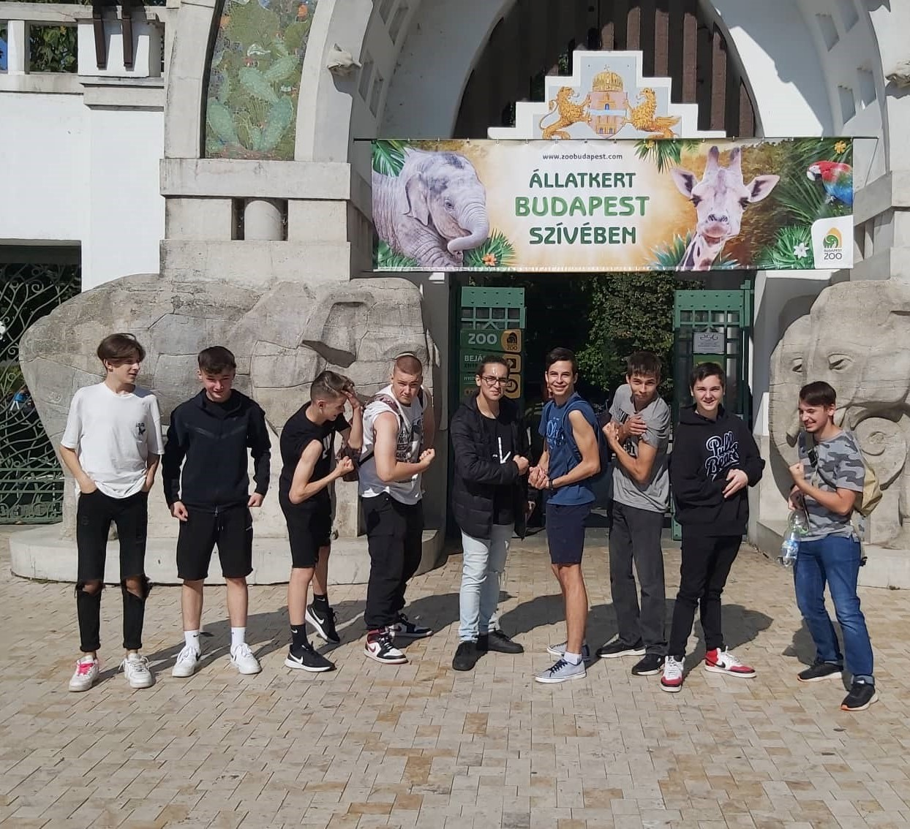
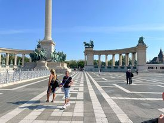
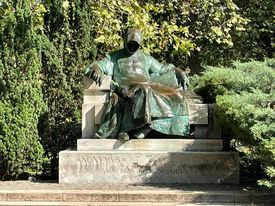
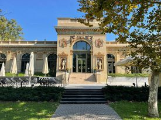

Az állatkertből kiszabadult állatokat kellett összegyüjtenünk,szerencsére nem juttotak túl messziree a kaputól, gyorsan megtaláltuk őket a keresztrejtvényben!
A hősök terén egy térkép alapján kellett megtalálni ami elvezetett az uralkodóhoz, és az uralkodó egy oroszlán volt!
A 3.helyszínen a kápolna előtti a szobrok fogsorát kellett megvizsgálni és megszámolni őket!
Ezen a helyszínen az Anonymous szobor alól kellett leírni a szöveget majd megfejteni annak jelentését!
Itt a fák törzséröl és odukból kellett a betükből kirakni a szavakat, ha jó sorrendbe tettük ezeket a betüket a növények neve jött ki!
A végső állomáson egy mesebeli állatot láttunk. amit X-el kellett jelölni a füzetbe ha láttuk az épitményen!
